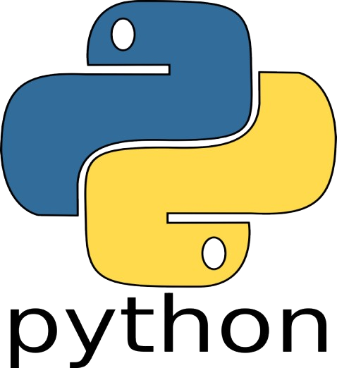

Hello 🤓, I am A. Dewa Fortuna Mogot
Seorang Mahasiswa IMT
I am still on my first years as an programmer😎, over these past years i've been been learning a built about UI/UX Java language and also python😵, and right now i am learning about tailwind and bootstrap😋. Well, outside of college life, I like playing games and watching anime. I used to have pets like cats and fish, but they kept dying over and over, so I thought maybe I shouldn't be a pet owner.
List of Skills
